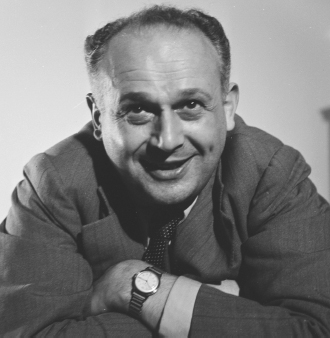

Feldenkrais for Actors
Movement is Life
I was looking on a forum where actors left comments about their experience of drama school, and in the discussions of movement lessons I found everything from ‘The Most Useful Thing I Ever Did’ to the marvellous title of ‘Wanky Movement’. I am sure neither of these actors is alone in their opinions. However, instead of asking why would you want to study movement as an actor throughout your career, I would like to turn it around and ask: why on earth wouldn’t you? If someone said to you that there is something which is absolutely integral to people’s characteristics of behaviour, which governs how they do anything, reveals who they are, and is so fundamental to life that no one would even be able to stay alive without it – wouldn’t you, as an actor or person who works with actors, want to know as much about it as you possibly could? I do find these days that more actors and students have an expectation that they will study movement, but it’s still worth having a look at the question to understand why an approach like Feldenkrais is useful. Forgive me if you need no convincing.
Moshe Feldenkrais always stressed that there is no life without movement. Everything you do to stay alive or continue the species involves movement: breathing, seeing, getting food or drink, chewing, swallowing, defecating, urinating, having sex, giving birth, communicating, escaping danger, fighting. No movement: no life.
Then think about the different skills and strengths people develop in their lives and in the jobs they do, such as building, digging, lifting, typing, drawing, sculpting, cleaning, cooking, sewing, painting, singing, playing an instrument, playing a sport, dancing in many varied ways, driving, skating, learning a fighting style and so on. Wouldn’t it be surprising if what you did a lot of in your life didn’t shape you? And what about all those descriptions of people that imply a quality of movement: spineless, slippery, solid, flaky, ‘stiff upper lip’, strong, weak, withdrawn, outgoing, impetuous, tenacious? Can you laugh, cry, smile, get angry without involving movement? Movement is the stuff of life. Literally. So why on earth wouldn’t you study it in a myriad of ways to be an actor? Wouldn’t it, in fact, be completely weird not to do so?
It is worth making those observations even if they turn out to be obvious to some, because when you consider how you might learn something about how movement shapes people (how they behave, how they communicate, the quality they bring to any simple task or interaction), you realise you need a very particular kind of process.
Any study of movement that is going to help you learn these kinds of things is unlikely to be about press-ups, weights, stretching and doing the splits. Those things can be fun and help you feel good and might be part of what’s needed for a specific role or a requirement for a style of theatre (some of those things might even have a contribution to health or fitness), but they are not going to help you learn much about different ways and qualities of behaving, being or doing. Moreover, exploring behaving, being and doing is notoriously tricky and can be very challenging because any process devoted to it is also bound to reveal something about who and how you are: your edges and limitations as a person. And then any such process may feel a little strange and unusual because the territory, as well as the means, is likely to be unfamiliar. Mechanical exercise, which we tend to be more used to, just doesn’t cut it here. It can’t do the job of delving into human behaviour in all its rich variety and subtlety.
You may find a process that does address the job liberating, exciting and unbelievably interesting. Or you may want to call it ‘wanky movement’. If the latter is true, there are other ways in. However, in the end you will come up against patterns and habits of movement because they are fundamental to patterns and habits of human behaviour, and exploring human behaviour is what an actor does. So at some point you will probably just have to get over yourself and learn how to work with movement in some way if you want to develop further. It’s true that everyone has limitations to who and how they can be, but many also accept unnecessary limitations to their skill, artistry and casting by hiding behind ‘It’s not me’, whether they are the student who can’t deal with ‘wanky movement’ or the seasoned actor simply stuck in a comfortable (or uncomfortable) rut.
The Feldenkrais Method uses movement in a great variety of structured ways to enable you to explore how you personally respond or do things; to open up new avenues and expand your possibilities. It is not a complete study of acting all on its own, of course, and there are other movement methods that complement it and take some aspects further. However, as its focus is on the fundamentals of human functioning and developing potential, and as it enables people to experience what they do clearly and to travel beyond their habits in ways they may not have been able to envisage otherwise, it is a very valuable Method for actors. It’s like giving them a box of toys to play with that they didn’t know they had. In fact, there are very many more ways that the Method works for actors, but I will unpack them as we progress.
Frank Wildman – dancer, performer and Feldenkrais trainer who studied with Moshe Feldenkrais and was in one of his legendary workshops with Peter Brook’s Company (CIRT) – told me that while Feldenkrais worked with many kinds of people from all walks of life (as all Feldenkrais teachers do), he thought his work could be most fully embodied in an actor because they needed to address the use of themselves in every way.
What This Book Is – and Is Not
This book is addressed to students of acting and to actors, directors, makers and teachers of anything to do with performance. No book could claim to be the only book on Feldenkrais for actors. This one is just my book. Another practitioner will no doubt have other things to say and other ways to say it. It represents my study and my experience of Feldenkrais since I discovered it while training as an actor with Philippe Gaulier and Monika Pagneux twenty-nine years ago. The Method has been part of my life since then through twenty years as an actor, theatre-maker and occasional movement director, and another nine as a professional Feldenkrais practitioner. I now teach in drama schools and other professional acting organisations and offer one-to-one coaching for actors. I also work with singers, dancers, musicians, martial artists, runners and people from many other walks of life.
It is not an academic book, although I hope the academics will find enough to enjoy. It is intended more for practitioners of theatre and film, and students heading into the business. However, it is also not a complete ‘how-to’ manual. If you find you do want to really learn the Feldenkrais Method, look for a teacher (see the Appendix). I have included lessons and games as practical examples to give you a taste, but these are only a very few of the several thousands of lessons available.
Please do not think that this book will enable you to teach the Feldenkrais Method as such either. It is not possible to read a book or do one or two workshops and ‘know’ the Method. It takes four years’ study to become even the most basic of professional practitioners, and then you have your learner plates on for several years until you have spent thousands of hours gaining experience. The process itself is humbling for many of us who started as professionals in one line or another thinking we knew something about Feldenkrais, as, in my experience, it is only when you are some way down the line of professional study that you realise just how enormous the possibilities are and how comparatively little you actually know about the work. Of course, even in the first lesson you learn something, and so it is a rewarding journey right from the start. It is not that you have to study and wait for years for any benefit as a student. It may also give you ideas you wish to share, which is legitimate – but the understanding is cumulative and involves a long process of gradually piecing it together and finding ever-deeper layers and connections in order to teach it fully. In fact, you can keep deepening your understanding for the whole of your life as there is nothing more complex than the study of life itself, which is ultimately what this Method turns out to be. Great! It would be boring otherwise, wouldn’t it? If you could learn it in a couple of weeks, what would be its worth? Really? I hope this book will give you background, context, ideas and understanding of the kinds of things you could find, develop and explore if you went further.
• Can you become a good actor without this work? Of course. It would be ridiculous to suggest otherwise.
• Can a very experienced actor improve further with this kind of work? Of course. Everyone needs to continue to explore and develop, otherwise they stagnate: at any stage in your career the Feldenkrais Method can offer you a way to delve deeper and improve.
• Will everyone want to learn this way? No. Nothing is for everyone. There are many paths to the top of the mountain.
However, the Feldenkrais Method does encompass a unique and profound understanding of human functioning and of how you are you – and the detail of it is like nothing I have come across elsewhere. What I do hope this book will do is go some way to enabling you to understand some of what is very useful about that process for actors, so that you are encouraged to go out and try it for yourself.

Dr Moshe Feldenkrais
© International Feldenkrais Federation Archive